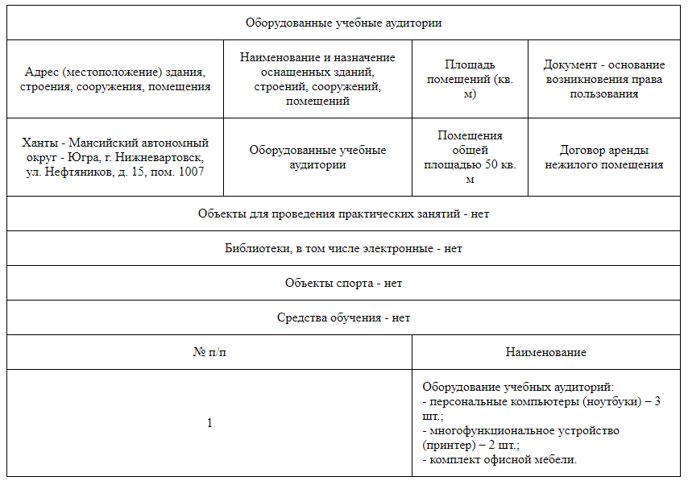

В Образовательной организации созданы специальные условия для обучения инвалидов и лиц с ограниченными возможностями здоровья, а именно:
1. Сведения о наличии оборудованных учебных кабинетов, объектов, для проведения практических занятий, библиотек, объектов спорта, средств обучения и воспитания, в том числе приспособленных для использования инвалидами и лицами с ограниченными возможностями здоровья.

2. Сведения об обеспечении доступа в здания образовательной организации инвалидов и лиц с ограниченными возможностями здоровья
Доступ на территорию, где располагается Образовательная организация, и в здание Образовательной организации беспрепятственный.
Вход оборудован звонком, которым можно воспользоваться, при необходимости, для вызова сотрудника, ответственного за сопровождение лиц с ограниченными возможностями здоровья.
В помещениях Образовательной организации коридоры и дверные проемы достаточной ширины для свободного перемещения лиц с ограниченными возможностями здоровья.
3. Сведения об условиях питания обучающихся, в том числе инвалидов и лиц с ограниченными возможностями здоровья
В Образовательной организации созданы условия питания обучающихся, в том числе инвалидов и лиц с ограниченными возможностями здоровья. В шаговой доступности от Образовательной организации располагается кафе «KFC»
Условия питания организованы в виде отдельной комнаты для приема пищи.
4. Сведения об условиях охраны здоровья обучающихся, в том числе инвалидов и лиц с ограниченными возможностями здоровья
Образовательная организация создает условия для охраны здоровья обучающихся, в том числе инвалидов и лиц с ограниченными возможностями здоровья.
Образовательная организация обеспечивает:
- соблюдение государственных санитарно-эпидемиологических правил и нормативов;
- расследование и учет несчастных случаев с обучающимися во время пребывания в Образовательной организации в порядке, установленном действующими нормативными правовыми актами;
- проведение санитарно-противоэпидемических и профилактических мероприятий;
- обучение педагогических работников навыкам оказания первой помощи.
Образовательная организация обеспечивает выполнение требований СанПиН и противопожарную безопасность обучающихся.
Образовательная организация осуществляет влажную уборку учебных аудиторий, поддерживает режим «проветривания» помещений, уборку санузлов с применением моющих и дезинфицирующих средств, организует проведение дезинфекции, дератизации и дезинсекции помещений.
Образовательная организация обеспечивает своевременный ремонт помещения и осуществляет все ремонтные работы в отсутствие обучающихся в помещениях Образовательной организации.
Образовательная организация обеспечивает безопасность обучающихся во время пребывания их в Образовательной организации. Осуществляется профилактику несчастных случаев с обучающимися во время пребывания их в Образовательной организации.
В Образовательной организации созданы условия для соблюдения питьевого режима и питания обучающихся.
Локальными актами Образовательной организации определена оптимальная учебная нагрузка, режим учебных занятий (Режим занятий обучающихся, Расписание занятий). Расписание занятий предусматривает перерывы достаточной продолжительности для обеспечения питания, отдыха и психологической, эмоциональной разгрузки обучающихся.
Образовательная организация проводит пропаганду и обучение навыкам здорового образа жизни, требованиям безопасности жизнедеятельности, созданы условий для профилактики заболеваний и оздоровления обучающихся.
В Образовательной организации ведется работа по профилактике и запрещению курения, употребления алкогольных, слабоалкогольных напитков, пива, наркотических средств и психотропных веществ, их аналогов и других одурманивающих веществ.
Образовательная организация обеспечивает плановое, не реже одного раза в три года, обучение педагогических работников навыкам оказания первой помощи и ежегодный плановый инструктаж по оказанию первой помощи обучающимся.
5. Сведения о доступе к информационным системам и информационно-телекоммуникационным сетям, в том числе приспособленным для использования инвалидами и лицами с ограниченными возможностями здоровья.
В учебных аудиториях Образовательной организации возможно подключение к беспроводной сети «wi-fi» для доступа к сети «Интернет». Доступ к беспроводной сети «wi-fi» осуществляется с использованием индивидуального логина и пароля.
6. Сведения об электронных образовательных ресурсах, к которым обеспечивается доступ обучающихся, в том числе приспособленных для использования инвалидами и лицами с ограниченными возможностями здоровья.
Электронные ресурсы, к которым обеспечивается доступ для обучающихся:
- Министерство образования и науки Российской Федерации (http://минобрнауки.рф)
- Федеральный портал «Российское образование» (http://www.edu.ru/)
- Федеральный центр информационно-образовательных ресурсов (http://fcior.edu.ru/)
7. Сведения о наличии специальных технических средств обучения коллективного и индивидуального пользования для инвалидов и лиц с ограниченными возможностями здоровья.
Обучение лиц с ограниченными возможностями здоровья и инвалидов осуществляется с применением дистанционных образовательных технологий, индивидуально.
В образовательном процессе для лиц с ограниченными возможностями здоровья и инвалидов учитываются индивидуальные особенности, применяются средства приема-передачи учебной информации, электронные образовательные ресурсы, обеспечивающие доступную форму восприятия.
8. О наличии условий для беспрепятственного доступа в общежитие, интернат и количестве жилых помещений в общежитии, интернате, приспособленных для использования инвалидами и лицами с ограниченными возможностями здоровья.
В Образовательной организации не предусмотрено общежитие и интернат.